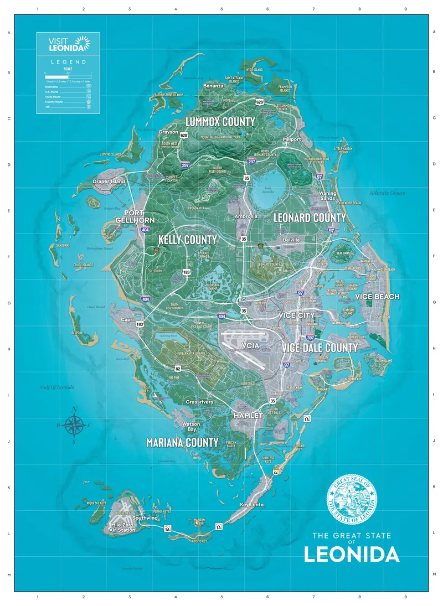
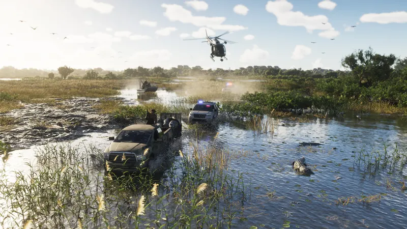
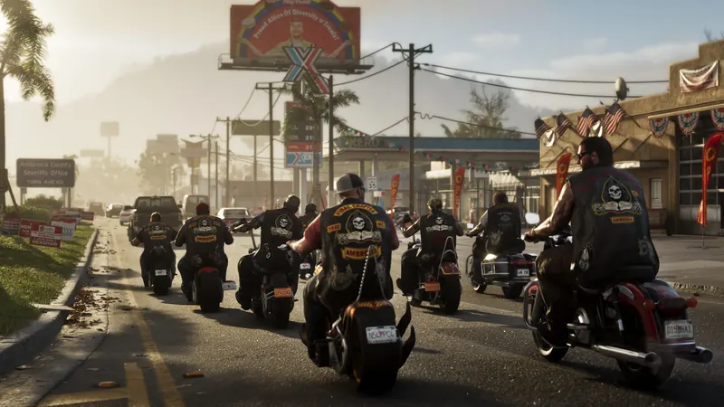
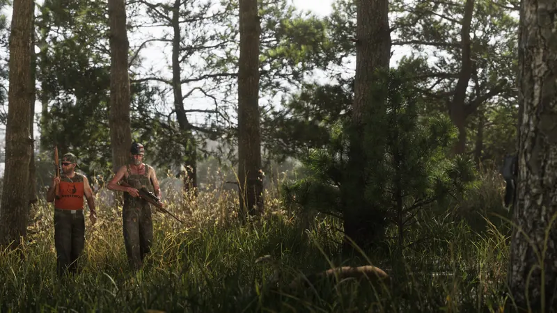

What is the GTA 6 map like? The regions of Leonida
Short answer
GTA 6 is set in Leonida, a fictional state inspired by Florida. Rockstar presents six regions: Vice City, Leonida Keys, Grassrivers, Port Gellhorn, Ambrosia and Mount Kalaga.

The six official regions
Rockstar's descriptions, as reported by Game Informer in May 2025, summarized:
- Vice City: the big city, where luxury, hustle and greed come together.
- Leonida Keys: islands with dangerous waters.
- Grassrivers: wetlands with predators deadlier than gators.
- Port Gellhorn: parking lots fueled by cheap beer, painkillers and gas-station energy drinks.
- Ambrosia: the heartland of Leonida, with old-fashioned values.
- Mount Kalaga: a national park for hunting, fishing and off-roading.






What the official map shows
The map poster Rockstar published on the official GTA VI site divides Leonida into five counties: Lummox, Kelly, Leonard, Vice-Dale and Mariana. According to that map:
- Vice City sits on the east coast in Vice-Dale County, with Vice Beach across the bay.
- Port Gellhorn is on the west coast.
- Ambrosia is in the middle of the state.
- Mount Kalaga National Park covers the north, in Lummox County.
- Grassrivers lies to the south, between Kelly and Mariana counties.
- Leonida Keys: the island chain to the south, including Key Lento.
Is Vice City Miami?
Rockstar never names Florida. Outlets such as PC Gamer compare Vice City to Miami, the Leonida Keys to the Florida Keys and Grassrivers to the Everglades, but those are the press's comparisons. We haven't found reliable equivalents for Port Gellhorn, Ambrosia or Mount Kalaga.
GTA 6's Vice City is set in the present day, not the 1980s of 2002's Vice City. Want to know who lives here? Meet the protagonists.
Sources
- Rockstar Games: Only in Leonida (official site)
- Rockstar Games: official Leonida map poster (Media & Artwork)
- Game Informer: Rockstar shows off six major areas in GTA VI
- PC Gamer: GTA 6 map
Written by Six Stars from the sources above, checked on November 20, 2026. Spot a mistake? Tell us via About us.